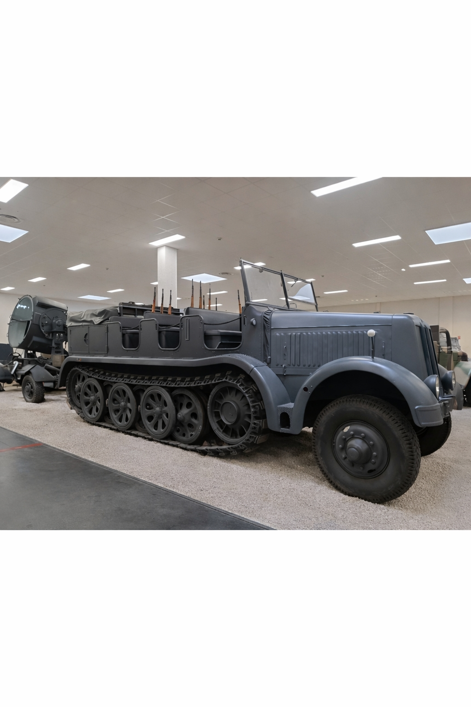
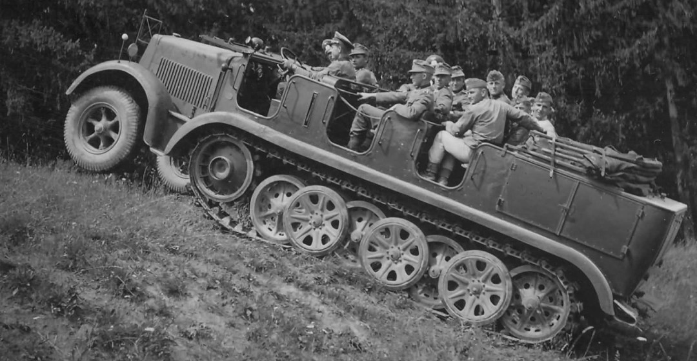
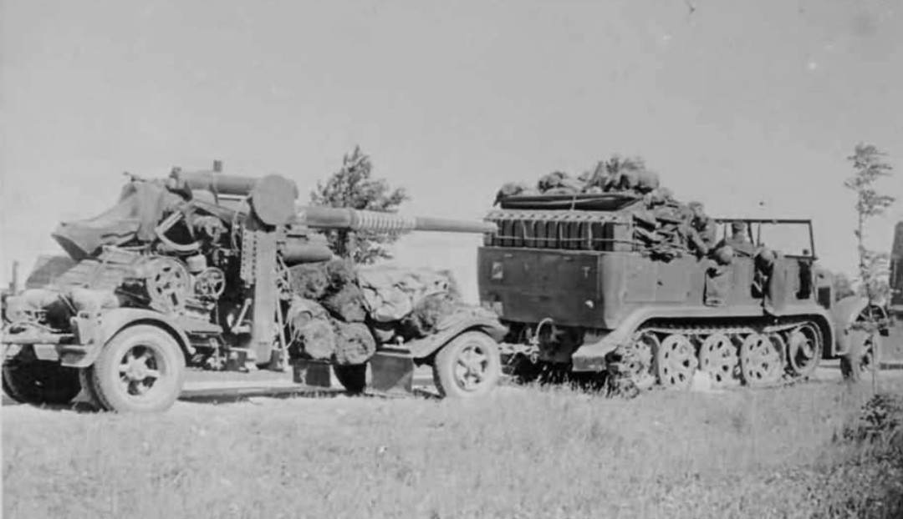

Le Sd.Kfz. 7 est l’un des véhicules les plus emblématiques de la Wehrmacht. Semi‑chenillé puissant, capable de tracter les canons les plus lourds, il formait avec le Flak 88 une combinaison redoutée sur tous les fronts. Non blindé mais robuste, il transportait les servants, les armes, les munitions et le matériel nécessaire à l’artillerie allemande.

Grâce à son système semi‑chenillé, le Sd.Kfz. 7 pouvait franchir des pentes, des terrains boueux, des sols instables et des zones où les camions classiques s’enlisaient. Cette mobilité exceptionnelle en faisait un engin indispensable pour déplacer l’artillerie lourde, même dans les conditions les plus extrêmes.

Le Sd.Kfz. 7 n’était pas seulement un tracteur : il transportait l’ensemble des servants du canon, leurs armes individuelles, les caisses de munitions, les outils et les équipements. Ses banquettes latérales et ses râteliers pour fusils témoignent de son rôle central dans les batteries d’artillerie.

Le canon de 88 mm, conçu pour l’anti‑aérien, devint l’une des armes antichars les plus redoutées de la guerre. Le Sd.Kfz. 7 était son tracteur officiel : il amenait le canon, les hommes et les munitions sur le front. Ensemble, ils formaient une unité mobile capable de frapper loin, vite et avec une précision redoutable.